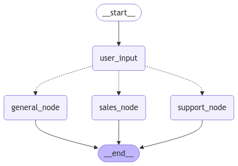
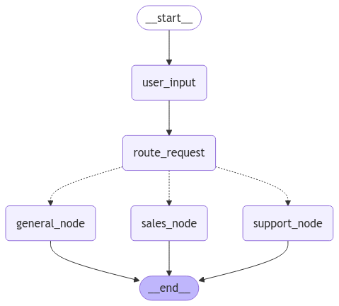

🚦 Tema 6: Routers – Dirigiendo el Flujo del Grafo
🚀 ¿Qué es un Router en LangGraph?
Los routers en LangGraph son nodos especiales que permiten redirigir el flujo hacia diferentes caminos en función de condiciones dinámicas.
A diferencia de los edges condicionales, los routers centralizan y gestionan múltiples bifurcaciones desde un solo punto, haciendo que los grafos sean más modulares, limpios y escalables.
🧠 ¿Por qué usar Routers en lugar de Condicionales?
- Centralización: Un solo nodo puede gestionar múltiples caminos, evitando bifurcaciones dispersas.
- Escalabilidad: A medida que crecen los caminos posibles, los routers permiten expandir el grafo sin añadir complejidad.
- Reutilización: Un mismo router puede ser usado en diferentes partes del grafo.
- Legibilidad: Mantiene el grafo organizado y fácil de seguir.
👉 Piensa en el router como un semáforo 🚦 que dirige el tráfico hacia diferentes carriles en función de las señales recibidas.
⚙️ ¿Cómo Funciona un Router?
Un router funciona tomando una decisión basada en el estado del grafo o en parámetros específicos de entrada.
Define múltiples caminos posibles y selecciona uno, enviando el flujo hacia el nodo correspondiente.
📋 Ejemplo Práctico: Chatbot con Router de Departamentos
Vamos a crear un chatbot que redirige al usuario a diferentes departamentos según el tipo de pregunta:
- Soporte Técnico: Para resolver problemas técnicos.
- Ventas: Para consultas de productos o servicios.
- Consultas Generales: Para cualquier otra pregunta.
El router analizará el mensaje del usuario y lo dirigirá al nodo adecuado.
from typing_extensions import TypedDict
class State(TypedDict):
message: str
response: str
def user_input(state: State):
print("--- Nodo 1: Entrada del Usuario ---")
print(state["message"])
return state
def route_request(state: State) -> str:
message = state["message"].lower()
if "soporte" in message or "problema" in message:
return "support_node"
elif "comprar" in message or "precio" in message:
return "sales_node"
else:
return "general_node"
def support_node(state: State):
print("--- Nodo de Soporte Técnico ---")
state["response"] = "Te estamos transfiriendo a soporte técnico."
return state
def sales_node(state: State):
print("--- Nodo de Ventas ---")
state["response"] = "Te conectamos con el equipo de ventas."
return state
def general_node(state: State):
print("--- Nodo de Consultas Generales ---")
state["response"] = "Tu consulta será respondida a la brevedad."
return state
🔍 Explicación del Ejemplo:
- Nodo 1 (user_input): Recibe el mensaje del usuario.
- Router (route_request): Evalúa el mensaje y redirige al nodo correspondiente:
support_node,sales_nodeogeneral_node. - Nodos de Respuesta: Cada nodo proporciona una respuesta basada en el departamento al que se redirigió al usuario.
🏗️ Construcción del Grafo con Router
Agregamos el router y conectamos cada nodo de respuesta al flujo.
from langgraph.graph import StateGraph, START, END
builder = StateGraph(State)
builder.add_node("user_input", user_input)
builder.add_node("support_node", support_node)
builder.add_node("sales_node", sales_node)
builder.add_node("general_node", general_node)
builder.add_edge(START, "user_input")
builder.add_conditional_edges("user_input", route_request)
builder.add_edge("support_node", END)
builder.add_edge("sales_node", END)
builder.add_edge("general_node", END)
graph = builder.compile()
📈 Visualización del Grafo
Para observar cómo se estructura nuestro grafo, generamos una visualización:

🚀 Invocando el Grafo
Probamos el grafo con diferentes entradas para ver cómo el router dirige el flujo.
--- Nodo 1: Entrada del Usuario ---
--- Nodo de Ventas ---
{'message': 'Quiero comprar un producto', 'response': 'Te conectamos con el equipo de ventas.'}
--- Nodo 1: Entrada del Usuario ---
--- Nodo de Ventas ---
{'message': 'Tengo un problema con mi cuenta', 'response': 'Te estamos transfiriendo a soporte técnico.'}
--- Nodo 1: Entrada del Usuario ---
--- Nodo de Ventas ---
{'message': '¿Cuál es el horario de atención?', 'response': 'Tu consulta será respondida a la brevedad.'}
Dependiendo del contenido del mensaje del usuario, el flujo tomará caminos distintos, demostrando el poder y flexibilidad de los routers.
🛠️ Usando "Command" para Modificar el Estado Durante el Enrutamiento
Además de redirigir el flujo del grafo, LangGraph permite modificar el estado directamente desde el router usando Command.
Esto es útil cuando, además de dirigir al usuario a un nodo específico, queremos actualizar atributos del estado sin necesidad de crear nodos adicionales.
🚀 ¿Qué es un Command en LangGraph?
Un command es una instrucción que permite realizar dos acciones simultáneas:
- Enrutar el flujo del grafo hacia un nodo específico.
- Actualizar o modificar atributos del estado.
🧩 ¿Por Qué es Útil?
- Optimización: Evita la necesidad de crear nodos adicionales solo para actualizar el estado.
- Simplicidad: Mantiene el flujo del grafo más limpio y con menos nodos intermedios.
- Eficiencia: Reduce el número de pasos y permite que el grafo sea más dinámico y reactivo.
📋 Ejemplo Práctico con Command
Modificaremos nuestro chatbot para que, además de redirigir al usuario a un departamento, actualice el estado con un mensaje indicando a qué sección fue transferido.
from typing_extensions import TypedDict, Literal
from langgraph.types import Command
class State(TypedDict):
message: str
response: str
department: str
def user_input(state: State):
print("--- Nodo 1: Entrada del Usuario ---")
#state["message"] = "Necesito soporte técnico"
return state
def route_request(state: State) -> Command[Literal["support_node", "sales_node","general_node"]]:
message = state["message"].lower()
print("--- Nodo 2: Ruta de la Solicitud ---")
if "soporte" in message:
return Command(goto="support_node", update={"department": "Soporte Técnico"})
elif "comprar" in message:
return Command(goto="sales_node", update={"department": "Ventas"})
else:
return Command(goto="general_node", update={"department": "Consultas Generales"})
def support_node(state: State):
print("--- Nodo de Soporte Técnico ---")
print(state["department"])
state["response"] = "Te estamos transfiriendo a soporte técnico."
return state
def sales_node(state: State):
print("--- Nodo de Ventas ---")
print(state["department"])
state["response"] = "Te conectamos con el equipo de ventas."
return state
def general_node(state: State):
print("--- Nodo de Consultas Generales ---")
print(state["department"])
state["response"] = "Tu consulta será respondida a la brevedad."
return state
🔍 Explicación del Ejemplo
- Router con Command: Ahora, el router no solo dirige el flujo sino que también actualiza el estado con el nombre del departamento seleccionado.
- Actualización Directa del Estado: Esto nos permite guardar un registro de a qué nodo fue transferido el usuario, lo que puede ser útil para análisis o futuros pasos en el flujo.
🚀 Invocando el Grafo
Probamos el grafo para observar cómo se actualiza el estado durante el enrutamiento.
from langgraph.graph import StateGraph, START, END
builder = StateGraph(State)
builder.add_node("user_input", user_input)
builder.add_node("route_request", route_request)
builder.add_node("support_node", support_node)
builder.add_node("sales_node", sales_node)
builder.add_node("general_node", general_node)
builder.add_edge(START, "user_input")
builder.add_edge("user_input","route_request")
# NOTE: No hay edges entre route_request y el resto de nodos!
builder.add_edge("support_node", END)
builder.add_edge("sales_node", END)
builder.add_edge("general_node", END)
graph = builder.compile()
from IPython.display import Image, display
display(Image(graph.get_graph().draw_mermaid_png()))

--- Nodo 1: Entrada del Usuario ---
--- Nodo 2: Ruta de la Solicitud ---
--- Nodo de Soporte Técnico ---
{'message': 'Necesito soporte técnico',
'response': 'Te estamos transfiriendo a soporte técnico.',
'department': 'Soporte Técnico'}
--- Nodo 1: Entrada del Usuario ---
--- Nodo 2: Ruta de la Solicitud ---
--- Nodo de Ventas ---
{'message': 'Quiero comprar un producto',
'response': 'Te conectamos con el equipo de ventas.',
'department': 'Ventas'}
--- Nodo 1: Entrada del Usuario ---
--- Nodo 2: Ruta de la Solicitud ---
--- Nodo de Consultas Generales ---
{'message': 'Tengo una pregunta general',
'response': 'Tu consulta será respondida a la brevedad.',
'department': 'Consultas Generales'}
El estado reflejará tanto la respuesta del nodo como el departamento al que fue transferido el usuario.
🔎 Recursos:
- Ver notebook en Google Colab
 Definición Command
Definición Command- How-to-guide Command
🧑🏫 ¿Qué Hemos Aprendido?
- Routers: Son nodos que gestionan múltiples bifurcaciones desde un solo punto.
- Centralización y Escalabilidad: Los routers permiten mantener un grafo limpio y organizado, facilitando la expansión.
- Flujos Dinámicos: Los routers toman decisiones en tiempo real basadas en el estado o entrada del usuario.
🌐 ¿Qué es lo Siguiente?
En el próximo tema, hablaremos de Reducers, que permiten consolidar datos y resultados de diferentes caminos dentro del grafo.
Los reducers trabajan en conjunto con los routers, formando flujos completos y optimizados.